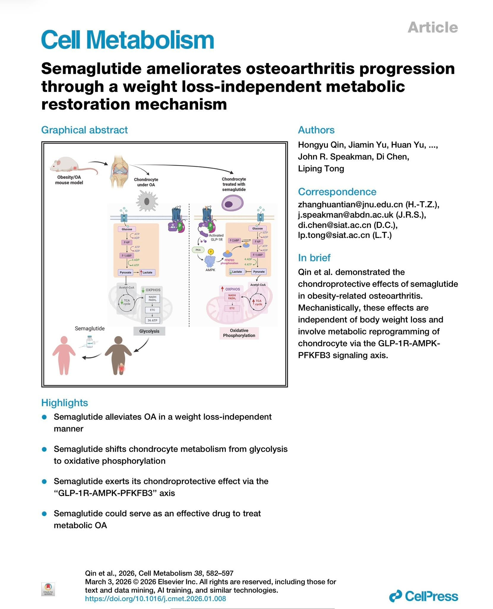

Osteoarthritis is not just wear and tear.
It has a strong metabolic component. This is why GLP-1 agonists are showing promise in treating it.
“Cartilage health reflects the metabolic state of the entire organism.”
Louis shares Luigi Fontana's view that osteoarthritis is not simple wear and tear but reflects whole-body metabolic state, and that the semaglutide headlines risk missing this message.
Osteoarthritis is not just wear and tear.
It has a strong metabolic component. This is why GLP-1 agonists are showing promise in treating it.
“Cartilage health reflects the metabolic state of the entire organism.”
Many headlines discussing recent studies focus on semaglutide as a potential therapy for osteoarthritis.
In my view, this interpretation risks missing the most important biological message.
Osteoarthritis is often described as a simple “wear-and-tear” condition of aging. In reality, it is one of the leading causes of chronic pain and disability worldwide, with profound effects on quality of life.
When cartilage degenerates, the joint progressively loses its ability to absorb mechanical stress and allow smooth movement. Patients begin to experience symptoms that are very familiar in clinical practice: pain, stiffness, swelling, reduced mobility, and increasing difficulty performing everyday activities such as walking, climbing stairs, or rising from a chair.
Over time, the consequences go far beyond the joint itself:
reduced physical activity, loss of muscle mass, worsening metabolic health, increasing frailty, and loss of independence.Yes, excess body weight matters. It increases the mechanical load on joints—especially the knees, hips, and spine—and accelerates structural damage.
But stopping at biomechanics alone is an incomplete explanation.
Osteoarthritis is not simply a disease of mechanical overload. Increasing evidence suggests that it is also strongly influenced by systemic metabolic dysfunction.
Chondrocytes—the cells responsible for maintaining cartilage—are highly sensitive to the organism’s metabolic environment.
When metabolism is healthy, these cells maintain a delicate balance between cartilage synthesis, maintenance, and repair.
However, in conditions such as obesity, insulin resistance, and chronic low-grade inflammation, this balance becomes disrupted.
Several key metabolic changes occur:
- Mitochondrial dysfunction, reducing efficient ATP production
- A shift toward glycolytic metabolism, a less efficient energy pathway
- Chronic activation of inflammatory signaling pathways
- Increased production of matrix-degrading enzymes
- Reduced capacity for cartilage repair
In simple terms, metabolic dysfunction reprograms chondrocyte biology, pushing these cells toward a phenotype that favors cartilage degradation rather than maintenance.
For this reason, osteoarthritis should increasingly be understood as a disease of both biomechanics and metabolism.
From a clinical perspective, the implications are important. Improving systemic metabolic health—through nutrition, physical activity, body composition management, and preservation of muscle mass—may be one of the most powerful strategies to protect joint health and slow degenerative processes.
The joint does not exist in isolation.
Cartilage health reflects the metabolic state of the entire organism.
#MetabolicHealth #Osteoarthritis #LongevityMedicine #SystemsBiology #HealthyAging


Luigi Fontana's summary of a JAMA RCT in people with knee osteoarthritis and overweight/obesity: metformin reduced pain more than placebo. He frames it as aging biology (AMPK, mTOR, inflammation) as a treatment target, and notes lifestyle approaches like caloric restriction act on the same pathways. Little direct heart relevance.

Luigi Fontana explains that insulin is a nutrient-signaling hormone and that persistent activation of the insulin/IGF-1-AKT-mTOR network is linked to cell growth, aging biology and cancer-related pathways. Calorie restriction and weight loss are among the strongest ways to improve insulin sensitivity.

Louis shares a summary of a PNAS study finding that brain network destabilization, a precursor to cognitive decline, begins in midlife and is associated with insulin resistance and elevated blood pressure. The summary argues that visceral fat drives these and that diet and exercise to reduce it may protect the brain.

A shared Discover Magazine report says a records-based study found people with knee osteoarthritis taking GLP-1 receptor agonists had a significantly lower long-term risk of knee replacement, strongest with semaglutide and tirzepatide and with longer treatment. Louis added only hashtags; this is observational data.
Louis shares a ScienceAlert article on the semaglutide osteoarthritis study. Semaglutide reprogrammed the metabolism of cartilage-forming cells, reduced pain and cartilage degeneration, and in mice caused fewer bone spurs; the authors describe a weight-loss-independent repair mechanism.
Louis highlights a Cell Metabolism study in mice and people with obesity and osteoarthritis. After six months on low-dose semaglutide plus hyaluronic acid, MRI showed a 17% increase in cartilage thickness versus under 1% in the comparison group, with better knee function; Science News notes bigger trials are needed.